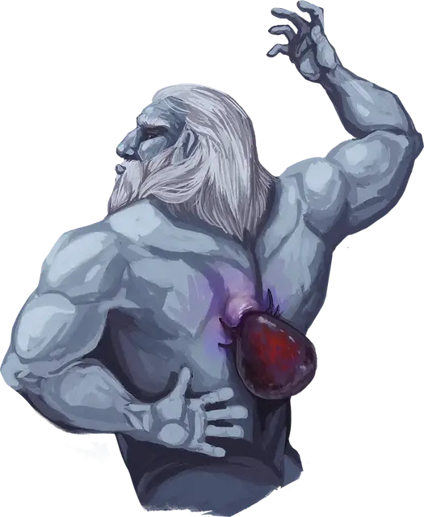

Гигантский клещ
Giant Tick
Средний Монстр, без мировоззрения

Класс Доспеха 14 (природный доспех)
Хиты 52 (7к8 + 21)
Скорость 30 футов
| мод | спас | ||
|---|---|---|---|
| СИЛ | 16 | +3 | +3 |
| ЛОВ | 10 | +0 | +0 |
| ТЕЛ | 16 | +3 | +3 |
| мод | спас | ||
|---|---|---|---|
| ИНТ | 2 | −4 | −4 |
| МДР | 10 | +0 | +0 |
| ХАР | 2 | −4 | −4 |
Чувства пассивное Восприятие 10
Опасность 2 (450 опыта)
Бонус мастерства +2
Действия
Хоботок. . Рукопашная атака оружием: +5 к попаданию, досягаемость 5 футов, одно существо. Попадание: 10 (2к6 + 3) колющего урона, и клещ прикрепляется к цели. Будучи прикреплённым, клещ не может атаковать хоботком. Клещ может открепиться, потратив 5 футов своего перемещение. Существо может действием попытаться отсоединить клеща, преуспев в проверке Силы Сл 13, если клещ находится в его досягаемости.
Высасывание крови. Клещ наносит 10 (2к6 + 3) урона некротической энергией одному существу, к которому он прикреплен, при условии, что это существо не является Конструктом или Нежитью, или 17 (4к6 + 3) урона некротической энергией, если существо является Великаном. Клещ восстанавливает количество хитов, равное нанесенному урону.
Описание
Клещи размером с кабана питались кровью великанов на протяжении бесчисленных веков. Хотя эти паразиты причиняют несметные неудобства великанам, они могут представлять ужасную угрозу для людей поменьше, поскольку голодный клещ выпьет кровь любого существа, которое сможет поймать.